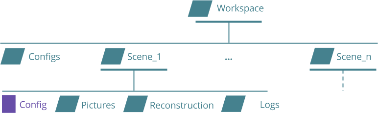

3.1. Global architecture of the application¶
The application has been splitted into several independent modules. Before going further in the description of connections and contents of each modules, let’s define the concept of module in our case.
3.1.1. What is called module¶
A module is related to a group of functions that are used to manipulate a specific entity. A module has no idea of the existence of other module and should never interact with another module directly. Instead of that, and thanks to the signals and slots system in Qt which may be seen as an implementation of the publisher / subscriber pattern, each module can emit signals whenever it wants to transmit some pieces of information to an interested module. In the same way, module can have slots that allow them to receive data from elsewhere.
3.1.2. Connections between modules¶
With this architecture, it is necessary to create top-level components that handle all connections between signals and slots of modules we want to link. This top-level components is the only one that import and know each module of the final application. Thus, if a module has to change because of any updates, the other modules will not have to be impacted by thoses changes; the top-level component is in charge of adapting the way they are connected if necessary. Also, the top-level component is responsible for both instantiating each module and handling errors coming from them.
On a first approach, we decided to only communicate with modules using signals and slots, and then, use the top-level component as a kind of big switchboard operator (like in 1950’s/1960’s) which may grab signals from one module, and dispatch them to other interested modules. However, there are some actions in the application that lead each time to identical successive calls to primary functions of several modules. Therefore, we’ve decided to use the top-level component to call directly functions of modules and transmit each result as parameters. Actually, signals and slots correspond to events and their handling. An event may require different actions on several modules. But, this actions are handled by the top-level component. The code below gives an overview of this principle (using the PyQt5 Syntax):
@pyqtSlot()
def slot_launchReconstruction():
intermediateResult = module1.function1()
module2.function2(intermediateResult)
module3.function3()
...
view.sig_launchReconstruction(slot_launchReconstruction)
In such a way, when the signal sig_launchReconstruction is emitted by an entity (for instance, a button pressed in the graphical interface), the corresponding slot will proceed and call functions to carry out the reconstruction.
3.1.3. A same working space¶
In order to simplify the manipulation of data within the application, we’ve decided that every pieces of data (photos, configuration files, exports and temporary files) will be placed under a same folder. This folder is called a scene. Then, as some parameters may be common to several scenes (that can be photos, or configs), all scene folders have been placed under a global parent folder called workspace. Then, it is possible for the user to create a workspace wherever he wants to but then, every single piece of data in that workspace should be manipulated by the application. A specific module in charge of those manipulations, the workspace manager, is detailed in the Components Implementation .
{kind=link}
To keep the same spirit as before, modules don’t have an idea of the structure of the workspace. That’s why, every module which want to export data in or grab data from the files system may require I/O paths as arguments. We also completly move aside the knowing of the workspace in a given module. The top-level component previously presented has therefore no idea of how the workspace is structured and may ask the workspace manager for any filepath.
3.1.4. Implementation details¶
In order to build the whole GUI, we have been using the QML language to handle all displays and user interactions. Indeed, we follow here a model / view pattern (described in the next section), where the view is also responsible for the user inputs. Also, as we shared the whole application into several modules, the view will be splitted all the same into several little views called Components. The challenge here, is to make all modules and Components communicate to each other as they are written using different tools. On one side, we are using PyQt5 which is a Python API that maps the existing C++ API Qt used for graphical user interface purposes. On the other side, we are building the view using the QML language, which is part of the Qt API as well. In fact, Qt gives us the opportunity of making views using their declarative language, and also enable smart ways to communicate from these views to a model or at least, an operative and logic part of the application. This is possible via Signals and Slots described previously. For more details about the way is implemented the communication, please go ahead to the next section.